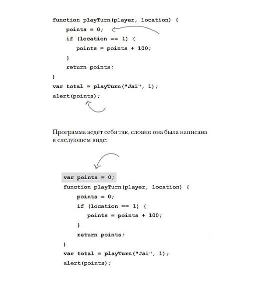
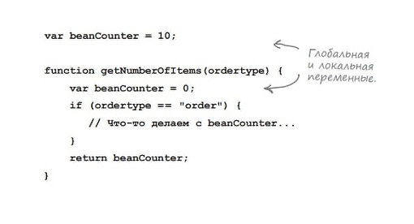

Головна > Тема 6
Функції (продовження)
При виклику функції їй передаються аргументи, які співставляються з параметрами з визначення функції.
В аргументі можна передати значення Javascript: рядок, число, булеве значення:
saveMyProfile("lady", 1991, 3.81, false);Змінні також можуть передаватися як аргументи:
var student = "krissy";
var year = 1991;
var GPA = 381 / 100;
var status = "existinguser";
var isNewUser = (status == "newuser");
saveMyProfile(student, year, GPA, isNewUser);Коли викликається функція, поточні значення змінних передаються як аргументи.
У якості аргументів можуть використовуватися вирази:
saveMyProfile(student, year, 381 / 100, status == "newuser");В Javascript використовується передача по значенню. Тобто:
1. Оголошуємо зміну age і надаємо їй значення 7.
var age = 7;2. Оголосимо функцію addOne з параметром x.
function addOne(x) {
x = x + 1;
}3. Викличемо функцію addOne і передамо їй в аргументі зміну age. Значення age копіюється в параметр x.
addOne(age);4. Значення x збільшується на 1. Але потрібно пам'ятати, що x містить копію початкового значення, тому збільшується лише x, а не age.
function addOne(x) {
x = x + 1;
}Експерименти з функціями
Експеримент 1: що буде якщо передати замало аргументів?
function makeTea(cups, tea) {
console.log("Brewing " + cups + " cups of " + tea);
}
makeTea(3);Параметр який не отримав аргумент набуде значення undefined.
Експеримент 2: а якщо аргументів буде забагато?
function makeTea(cups, tea) {
console.log("Brewing " + cups + " cups of " + tea);
}
makeTea(3, "Earl Grey", "hey ma!", 42);Javascript просто ігнорує зайві аргументи.
Експеримент 3: а якщо у функції взагалі немає параметрів?
function barkAtTheMoon() {
console.log("Wooooooooo!");
}
barkAtTheMoon();Нічого страшного, таких функцій багато.
Функція може повертати значення.
Розглянемо малюнок 6.3.
Змінні які використовуються всередині функції, оголошуються в тілі функції.
- Імена функцій задаються за тими ж правилами, що і змінні.
- Якщо імена аргумента і параметра співпадають, вони все одно вважаються різними змінними.
- Функція без команди return поверне undefined.
Глобальні і локальні змінні
Місце визначення змінних задає їх область дії.
Глобальні змінні існують поки існує сторінка. Якщо сторінку перезавантажити всі глобальні змінні будуть знищені і створені спочатку.
Локальні зміні зникають при завершені функції.
Якщо не оголосити змінну перед виконанням, то така змінна завжди буде глобальною (Навіть якщо вона вперше використовується всередині функції)
Якщо локальній змінній надати таке ж ім'я як вже існуючої глобальної змінної, виконається заміщення глобальної змінної.
Усі звернення до beanCounter всередині функції відносяться до локальної змінної. Кажуть, що глобальна змінна "заміщується" локальною (тобто її не видно тому що локальна змінна її загороджує). Локальні і глобальні змінні ніяк не впливають одна на одну; Якщо змінити одну, ця зміна ніяк не відобразиться на іншій.
Оголошення функції можна робити де завгодно у коді. В дійсності Javascript двічі опрацьовує сторінку: при першому проході читаються всі визначення функцій, а на другому починається виконання коду.
Закріплення знань
Написати програми за допомогою функцій:
1) Піднести до квадрату всі натуральні числа до N.
var n = +prompt('Введіть число: ');
function numberQ() {
for (var i = 1; i <= n; i++) {
console.log(i + " в квадраті = " + i*i);
}
}
numberQ();2) Знайти корені лінійного рівняння y=ax+b.
var x;
var y = +prompt('Введіть y: ');
var a = +prompt('Введіть a: ');
var b = +prompt('Введіть b: ');
function rivnyannya(y, a, b) {
x = (y - b) / a;
console.log(x);
}
rivnyannya(y, a, b);3) Чи є число N числом Мерсена? (Функція перевіряє чи Мерсен). Треба використати return.
var n = +prompt('Введіть число: ');
var i = 1;
var result = 1;
function numberM(result) {
while (result < n) {
result = 1;
for (var j = 1; j < i; j++) {
result = result * 2;
}
result = result - 1;
i++;
}
if (result == n) {
return true;
}
return false;
}
console.log(numberM(result));4) Морський бій (2 функції, наприклад влучення або не влучення і статистика)
function morskiyBiy() {
var guess,
hits = 0,
guesses = 0,
nGuess = 1,
text = "First guess: ",
gameResult = false,
randomN = Math.floor(Math.random()*3+1),
locs = [randomN,randomN+1,randomN+2];
while (gameResult == false) {
guess = +prompt(text);
if (guess > 0 && guess < 6) {
guesses++;
nGuess++;
for (var i = 0; i < locs.length; i++) {
if (guess == locs[i]) {
text = "hit! guess №" + nGuess + ": ";
delete locs[i];
hits++;
break;
} else {
text = "miss! guess №" + nGuess + ": ";
}
}
if (hits == 3) {
gameResult = true;
}
} else {
alert("Enter a valid cell number!");
}
}
alert("ship is sunk!");
alert("number of guesses = " + guesses);
}
morskiyBiy();